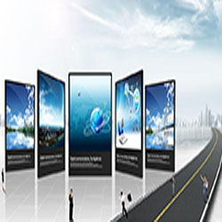

现代社会已进入信息时代，信息传播占有越来越重要的地位，同时人们对视觉媒体的要求也愈来愈高。近年，随着各项技术的迅速发展，半导体制作工艺日趋成熟，使得LED显示屏的应用范围日益扩大。
LED显示屏是20世纪90年代出现的新型平板显示器件，以其超大的显示画面、丰富的显示内容、灵活多变的显示方式，逐渐成为国际上显示系统的主流。作为LED产业的重要分支，我国led显示屏行业经过二十余年的发展，已经成长为LED领域最为成熟的一个细分市场。从单双色到全彩，从户外到室内，从高清到智能......市场对led显示屏提出了更高的要求，也为led显示屏行业注入了新的发展机遇。
本系统是采用S5PV210为实验平台作为Web服务器，利用Linux主机作为远程控制的客户端，开发出来一个远程控制LED显示系统。
LED （Light Emitting Diode），发光二极管，是一种能够将电能转化为可见光的固态的半导体器件。LED 的心脏是一个半导体的晶片，晶片的一端附在一个支架上，一端是负极，另一端连接电源的正极，使整个晶片被环氧树脂封装起来。当电流通过导线作用于这个晶片的时候，电子就会被推向其PN 结的P 区，在P 区里电子跟空穴复合，然后就会以光子的形式发出能量，这就是LED发光的原理。而光的波长也就是光的颜色，是由形成P-N结的材料决定的。LED显示屏就是一种由一个个小的LED模块面板组成的平板显示器，一般用来显示文字、图像、视频、录像信号等各种信息。
LED显示屏的种类较多，大致有以下四种分类法：一是按室内室外分类，二是按工作方式分类，三是按颜色的数量分类，四是按LED管的单位密度大小分类。
不同类型显示屏用途不同，各有优缺点，可根据需要侧重选择。室内LED显示屏与户外LED显示屏差别很大。首先是亮度不同，室内的发光亮度要比户外屏低出几倍到几十倍；把室内显示屏放在室外就像把电视机放在室外一样亮度不够。因此，户外屏必须采用超高亮度LED，而且为了进一步提高亮度和增加可视距离，在一个像素内往往要封装多只超高亮度LED。其次，户外屏须防（雨）水、防阳光直射、防尘、防高温、防风、防雷击等，而室内屏则无需考虑这些问题。
利用网络将本机电脑与S5PV210嵌入式设备连接，然后在本机上访问S5PV210嵌入式设备的IP地址进入前台网页以实现系统测试。
{kind=link}
{kind=link}
{kind=link}
{kind=link}
{kind=link}
{kind=link}